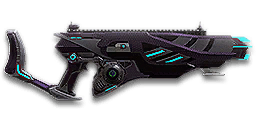

← Back to the H-V45 comparison
Sage Guide · Vanu Sovereignty · Combat Medic
The Vanu Sovereignty's close-quarters assault rifle for the Combat Medic. It costs 650 certs — not a starter — and earns every one of them inside 25 metres: 800 rounds a minute, a 0.75× ADS move speed, and the tightest hipfire cone of any assault rifle in the game.
The one-line verdict: the fastest-killing assault rifle up close — 0.45 s to kill at 10 m — that stays mobile while aiming and never has to aim high, because Vanu bullets don't drop. Its price is range: past 30 m every kill costs you extra bullets.

The H-V45 · Vanu Sovereignty · 30-round magazine · 650 certs
Picture the scene, because you've probably lived it: you're sprinting across a courtyard, an enemy appears, and you do everything at once — hold the trigger down while you're still running, then press aim-down-sights (ADS) a split-second later, finger still down. The sight picture snaps in, it looks precise… and your bullets spray everywhere except the man in your crosshair. He kills you. It feels like the game cheated. It didn't — here's what actually happened.
1 · SprintingYou're running flat out, firing from the hip. Sprinting maxes the cone at 7.0° — the widest it can ever be.
2 · Trigger heldEvery hipfire shot widens the cone further (+0.10° per shot). You are building a miss, one bullet at a time.
3 · ADS — too lateYou press aim mid-hold. The sight picture is neat — but ADS does not reset bloom. The bullets keep flying out of the wide cone.
You started firing from a sprint, from the hip. Sprinting is the least accurate state in the game: your cone of fire starts at 7.0° — fully bloomed, the widest it can ever be. Every shot you fire from the hip widens it further still (+0.10° per shot).
Then you pressed ADS mid-hold — and nothing reset. Aiming down sights does not shrink a cone of fire that is already bloomed. The scope only gives you a precise picture; the bullets keep flying out of the wide cone you built while running and hipfiring. That's the whole mystery: accurate-looking aim, wildly inaccurate gun.
Two timers stack the deck further: your gun needs about 0.3 s to settle after a sprint, and raising the sight itself takes ~0.15 s. Trigger held through all of it means your first half-second of fire is pure confetti.
1 · Feet. Let go of sprint (and the trigger, if you're already holding it). Stop, or drop into a strafe — anything but a full sprint.
2 · Sight. Press ADS and let the sight come up. This takes a heartbeat — that's fine, your Nano-Regen Device (F) is already topping you up.
3 · Trigger. Now fire. Starting from the aimed cone of 0.10°, your first shots land where the dot points, and you control the bloom from zero instead of inheriting a maxed-out cone.
Stop → aim → fire. If you take one habit from this entire page, take this one. You'll practise exactly this rhythm in the simulator in section 04.
1 · StopFeet planted, finger off the trigger. Give the sprint ~0.3 s to settle before you do anything else.
2 · AimPress ADS and let the sight come up — ~0.15 s. Your Nano-Regen Device covers the wait. Don't touch the trigger yet.
3 · FireNow shoot — from the 0.10° aimed cone. Short bursts of 5, release, repeat. The dot means it this time.
Exception — under ~8 mHipfire works here: the 1.5° cone is tighter than the chest. No ADS needed, stopping optional — keep moving and hose the chest.
Every enemy infantry has 1,000 health (500 shield + 500 health). Your bullet does 143 damage up close, fading to 100 at long range. Headshots count double, leg shots count less (×0.9). That gives you four numbers worth memorising:
| Range | Damage | Head | Chest | Legs | Chest vs shielded Heavy |
|---|---|---|---|---|---|
| Close · 0–10 m | 143 | 4 | 7 | 8 | 11 |
| Mid · 11–30 m | 143→125 | 4 | 8 | 9 | 12 |
| Far · 31–47 m | 125→112 | 5 | 9 | 10 | 13 |
| Long · 48 m+ | 112→100 | 5 | 10 | 12 | 15 |
Perfect-accuracy times to kill: 4 headshots ≈ 0.23 s, 7 chest shots ≈ 0.45 s up close. In real fights you'll land maybe half your rounds — still, this is why the head matters so much on this gun.
Full power to 10 m, then a steady slide to minimum at 60 m. The gold line shows Soft Point Ammunition, which stretches full power to 15 m.
One gun, four fighting styles. The right technique changes with distance — use the range finder below to see what your bullets do at any range, then learn the four bands underneath it.
How to fight hereAim down sights at the upper chest and neck. Fire in bursts of 5 — your recoil climbs into the head for free damage, and at 800 RPM a burst is over in a third of a second.
Aim: centre of the chest, from the hip. Keep moving.
Scoping in costs you time and drops your move speed — at arm's length that gets you killed. The H-V45 has the tightest hipfire cone of any assault rifle (1.5° standing), so strafe side to side (A/D) while firing and let your Nano-Regen Device soak the return fire.
Aim: neck / upper chest. Bursts of 5 rounds.
This is where the gun earns its 650 certs: full 143 damage, 800 RPM, and you still move at 0.75× while scoped — faster than any other assault rifle while aiming. Start your crosshair at the neck — the natural upward climb walks your shots into the head, and 4 head hits end the fight in 0.23 s. Strafe while scoped; you're barely slower, and a moving target still beats a still one.
Aim: chest. Bursts of 5 rounds, pause between them.
Damage is sliding toward 112 and your cone of fire blooms if you hold the trigger. Fire a burst, release for a split second to let accuracy reset, fire again. The recoil drifts up and to the right (15–20°), so pull your mouse gently down and to the left. Crouch or stand still when you can — both tighten your shots.
Aim: chest. Taps of 3–5 rounds at exposed targets only.
At 100 damage you need 10 chest hits — a long, loud advertisement of your position. Take these shots at stationary or fleeing targets, medics reviving, and engineers on turrets. Otherwise, your better play is to close the distance behind cover. No bullet drop means the dot stays on the chest — but the bullets still take 10 hits to do the job. Knowing when not to shoot is a skill too.
Your accuracy is decided by two things before skill even enters it: what your body is doing (your stance sets the starting cone of fire) and what your finger is doing (holding the trigger grows that cone with every shot). The H-V45 has no fire-mode switch — full-auto only — so "firing modes" are something you do with your finger, not a setting on the gun.
| Stance | Starting cone | What it means for you |
|---|---|---|
| Sprinting | 7.0° | Maxed out — the widest the cone can be. This is the section 01 disaster: never start firing from a sprint. |
| Hipfire, moving | 2.25° | Walking or strafing from the hip. Tight for an assault rifle — this is your point-blank stance. |
| Hipfire, standing | 1.5° | Your point-blank default. The 0.21 m ring at 8 m in section 05 is this stance drawn out. |
| Hipfire, crouched | 1.125° | The tightest hipfire you have (1.75° if you crouch-walk). Crouch when holding a doorway from the hip. |
| Aimed (ADS), feet planted | 0.10° | Standing or crouched makes no difference here — fifteen times tighter than hipfire. This is why section 01's order matters. |
| Aimed (ADS), strafing | 0.35° | The moving floor — the cone opens to 0.35° the moment you strafe while scoped. You still move at 0.75×, the fastest ADS strafe of any assault rifle, so strafe between bursts and plant your feet during each burst. |
| Mode | How your finger does it | Use it at |
|---|---|---|
| The mag dump | Hold the trigger and don't let go | Point blank only, or suppressing a doorway. Bloom maxes out fast — past ~8 rounds you're spraying, not aiming, and the 30-round magazine is gone in 2.2 seconds. |
| Bursts — the default | Hold for 5 rounds, release ~0.15 s, hold again. 6–8 rounds is fine while you're learning | Almost everything, 8–50 m. Each release resets the cone, so every burst starts at 0.10°. |
| Tap-fire | Short taps of 3–5, or single clicks, with a real pause between | 50 m and out, at exposed or stationary targets. Slow, but every round goes where the dot is — and with no bullet drop, the dot stays on the chest. |
Recoil, by the numbers: vertical 0.245, horizontal ±0.30 with a 0.8 tolerance, drifting 15–20° to the right, recovering at 18°/s after 75 ms — and the first shot of every burst kicks 3×. That first-shot kick is why the Angled Forward Grip (section 06) earns its keep here. The gun takes 0.65 s to swap to and ~0.15 s to raise the sight.
A target 30 m away, aiming down sights. Press and hold FIRE (mouse, touch, or hold Space with the button focused) and watch the holes walk wider the longer you hold — that's firing from an ever-growing cone. Release, let the cone reset, fire again. Aim for bursts of 5; 6–8 is tolerable while you're new. This practice window is shared by the whole Sage series: it's driven by a weapon profile plugged into the window — here the H-V45's (800 RPM, 0.10° starting cone, 0.05° bloom per shot, target at 30 m) — and the spread is drawn at true scale from those numbers.
Cone of fire — fills as you hold, empties when you release.
Your bursts will be graded here — green at 5 rounds, tolerable up to 8.
Some things are easier to show than to say. Here's what your bullets actually do: how wide hipfire spreads at 8 metres, what a good burst rhythm looks like, and what the 2x sight really changes. The hands-on version — holding the trigger yourself — is the practice window in section 04.
A full-size target 8 m away — an arm's-length room fight. The rings show where hipfire rounds land around your aim point (the chest). Sizes are drawn to scale from the gun's real cone-of-fire numbers.
Read it this way: standing still, the 0.21 m ring is well inside the chest — most rounds hit a target this size, which is why hipfire works point-blank, and why it works further out on this gun than on any other assault rifle. Move and it grows to 0.31 m — still inside the torso — so the edge rounds stay on him, and the rings only grow with distance while the man doesn't. Past ~10 m that's rounds starting to miss: the exact moment to switch to aiming down sights, where the spread shrinks to a dot. (Ring sizes use the real geometry: spread diameter = 2 × distance × tan(cone ÷ 2).)
Every shot widens your cone of fire ("bloom"). Releasing the trigger for a heartbeat resets it. Same 18 rounds, two very different outcomes:
The target pattern is bursts of about 5 rounds — that's the ideal. Bursts of 6–8 are fine while you're new (call it newbie tolerance). Past that, the bloom (0.05° per shot aimed, 0.10° from the hip) keeps growing with every shot, so the extra bullets mostly decorate the wall behind your enemy instead of hitting him. Short bursts also leave you rounds for the second enemy — remember, the magazine is only 30.
No zoom. The target at 35 m is small but the view is wide open — you see the crate, the tower, and the next enemy coming. Fast to aim, nothing blocks your edges. Best inside ~25 m.
Same target, same 35 m — but he looks twice as tall, so placing shots on his chest and head gets much easier. The price: your view narrows to the round window, the crate and tower are gone, and close targets feel fast and huge. Best at 25–50 m.
That's the whole 30-cert decision from section 06 in one picture: 1x for awareness, 2x for precision. Most veterans carry both and swap per base — indoors 1x, open ground 2x.
One thing to know up front: nothing on this gun is free. The H-V45 ships with iron sights and an empty rail — every optic and grip costs certs, and the gun itself costs 650 certs before you spend a single one on attachments. Everything below is an optional sidegrade, not an upgrade. Buy in the order shown and stop whenever the gun feels right. And two things don't exist for this gun at all: there is no High Velocity Ammunition, no Extended Magazine, no underbarrel and no Heavy Barrel — Census doesn't list them, so don't go hunting for them.
A clean dot-and-circle sight with no zoom. Your default choice, and honestly your best all-round option.
Good: everywhere indoors and out to ~25 m — which is most of this gun's life.
Bad: picking out targets past 50 m; that's what the 2x is for.
Doubles your view magnification. Costs the price of a few kills — the cheapest meaningful upgrade on this page.
Good: open-field bases, tower fights, and your 25–50 m burst game. Swap between 1x and 2x per fight.
Bad: tight indoor rooms — the zoom makes close targets feel fast and huge.
Night-vision sight: enemies glow white against a dark view, and it sees through smoke.
Good: night fights, smoky doorways, spotting infiltrators by their outline.
Bad: daytime and long range — its view is short-ranged and washes out in bright light.
VMS / V3 Holo (3.4x) and OG-4 / CSZ (4x) — sniper-style magnification on a close-quarters rifle.
Good: almost nothing a beginner does — recoil magnifies too, and tunnels your vision.
Bad: any fight inside 25 m, which is where you'll spend your first hundred hours with this gun.
The H-V45's recoil is already mild. Plenty of veterans run this slot empty forever.
Good: your first weeks. Spend certs on your Nano-Regen Device and suit slots first.
Bad: nothing — there's no downside to an empty slot.
Cuts vertical recoil by 30%. Costs you: hipfire spread grows 15%, and enemies see you on the minimap from 35 m farther away when you fire.
Good: if you mostly aim down sights at mid-range and the upward climb bothers you.
Bad: hipfire builds and sneaky play — you get louder on the map and sloppier from the hip.
Hipfire bloom grows 40% slower — much steadier hip spraying. But vertical recoil rises 20% when you do aim.
Good: a dedicated close-quarters build paired with the Laser Sight.
Bad: general play — it taxes the aimed shooting you'll do most.
You vanish from the minimap when firing and your shots are quiet. In exchange, damage starts dropping off 20 m sooner and bullets fly 15% slower (570 → 485 m/s) — harder to lead moving targets.
Good: flanking behind enemy lines, rooftop and tree work, solo play behind the front.
Bad: front-line fighting where everyone already knows where you are — you pay the damage cost for stealth you don't need.
Hides your muzzle flash so your own view stays clear at night — but you appear on enemy minimaps from 15 m farther away.
Good: night fights where your own flash blinds you. A comfort pick, nothing more.
Bad: as an early purchase — it changes no fight outcome. Buy it last, if ever.
Cuts side-to-side recoil by 25%, keeping your bursts on a single target. Tiny cost: weapon swap is 0.15 s slower. Note: unlike the starter rifles, it is not free on this gun — 100 certs.
Good: the default for aimed, mid-range play — buy it once you know you like the gun.
Bad: nothing meaningful. It only stops helping if you never aim down sights.
Hipfire accuracy improves by a third (33% tighter cone). Replaces the Forward Grip — you can't have both.
Good: indoor point-holds and stairwell fights where you hipfire inside 8 m.
Bad: open bases — you give up aimed recoil control for a bonus you rarely use.
The first shot of each burst kicks 60% less — but side-to-side recoil rises 10% on everything.
Good: your first shot kicks 3× — the hardest first-shot kick of any rifle on this page — so taming it pays more on this gun than on most. Disciplined burst and tap-fire at 25 m+.
Bad: longer bursts while you're still learning — the sideways trade still applies to every shot after the first.
A torch whose beam reveals cloaked infiltrators. Toggle it with the attachment key (X by default).
Good: hunting a stalker infiltrator camping your capture point — sweep corners with it.
Bad: as your everyday rail — it gives zero accuracy help, and the beam advertises your position.
Full 143 damage now reaches to 15 m instead of 10 m (the gold line on the chart above). Cost: bullets fly 10% slower (570 → 513 m/s).
Good: nearly always — most duels happen at 10–20 m, exactly where this extends your 7-shot / 4-headshot kill.
Bad: long-range duels against runners, where the slower bullet needs more lead. A small price.
0 certs on attachments · Day one
What the game hands you after the 650-cert unlock. Genuinely good — learn the gun on this before spending anything.
230 certs · Recommended
The best value in this whole guide. Covers every fight from a doorway to a tower courtyard.
200 certs · Indoor brawler
Built to hipfire down stairwells and hold a capture point room. Swap back to the All-Rounder outdoors.
200 certs · Flanker
No minimap blip, quiet shots, tight hipfire for the kills you take from behind. Weak in a fair fight — so don't take fair fights.
Your Nano-Regen Device (F key) heals you and the friendlies around you — but it only helps if it's running before the bullets arrive. Hear footsteps or expect a corner? Regen up, then peek. A medic at full health with regen running is a much harder kill than one at half.
Headshots deal double damage: 4 kills up close versus 7 to the chest. Don't aim at the head directly — aim at the neck and let the gun's natural upward climb carry shots two and three into the skull. It's the single biggest damage upgrade you own, and it's free.
Every shot widens your cone of fire. Holding the trigger past ~8 rounds at range means later bullets fly around your target, not into it. Five rounds is the ideal burst; release the trigger for a heartbeat between bursts — your accuracy resets and your hits per magazine roughly double.
Reloading with even 1 bullet left takes 2.565 s; an empty gun takes 3.2 s — an eternity mid-fight. Count roughly: after one kill or ~15 rounds, duck behind cover and reload early. Treat the last 10 rounds as your emergency reserve, not your working magazine. And remember your job: a dead medic revives nobody.
Walk with your crosshair at head height, pointed where an enemy's head will appear — a doorway edge, a corner, stairs. Most beginners lose fights in the half-second spent dragging the crosshair onto target. While firing, tap A/D to strafe: at 0.75× ADS move speed you're the fastest strafing rifleman in the game, and a moving medic is dramatically harder to headshot back.
Your damage, accuracy and hipfire all shine at close range. Sprint between cover, use buildings and rocks as stepping stones, and arrive at your range before opening fire. The player who chooses the range usually wins the duel — make it you. And stay near your squad: your revive tool is worth more than any kill.
Every gun has a price. Here's where the H-V45 pays — and the habit that covers each hole.
143 damage becomes 100 by 60 m: 7 chest shots become 10. The T1 Cycler still does 112 out to 80 m, the NC1 Gauss Rifle 125 out to 90 m — at range they simply need fewer bullets than you.
Play around it: don't trade at range. Break line of sight and close in, or let a longer-ranged squadmate take the shot while you keep them alive.
800 RPM empties the magazine in 2.2 seconds. The Pulsar VS1 carries the same 30, but there's no extended-magazine option on this gun at all — nothing to buy your way out of it.
Play around it: burst discipline (habit 3) and early reloads (habit 4). Five-round bursts give you six kills per magazine on paper; a mag dump gives you one, maybe two.
The first-shot recoil multiplier is 3.0× — the hardest first kick of any rifle on this page. The first round of every burst jumps more than the rest, so a burst that starts on the head can end over the shoulder.
Play around it: start your burst a touch low, on the neck rather than the chin — or fit the Angled Forward Grip, which cuts that first-shot kick by 60%.
Its recoil angle is 15–20° rightward. In a long burst your aim walks off the target's right shoulder — you'll see this clearly in the VR drill below.
Play around it: pull your mouse down-left while firing, in the opposite direction of the climb. The Forward Grip already trims the sideways part by 25%.
The Pulsar VS1 you already own does the same job at range for free, and reloads faster (1.75 s to your 2.565 s). You're paying 650 certs for close-quarters speed: 800 RPM, 0.75× ADS movement, and the tightest hipfire in the class.
Play around it: try the Pulsar first. Buy the H-V45 when you know you live inside 25 m — that's when the certs stop feeling expensive.
Open the world map, travel to VR Training, and run these on the target dummies. Five minutes before a play session beats an hour of dying confused.
Aim at a wall 20 m away and empty a full magazine without touching the mouse. Watch the bullet pattern climb up-right at 15–20° — that's your gun's fingerprint, and note how hard the first shot jumps (3×). Repeat, this time pulling down-left, until the group stays fist-sized.
Walk the dummy range keeping your crosshair glued to neck height the whole time, snapping to each new target without dipping to the floor or sky. Slow and clean first; speed comes on its own.
At 15–25 m, kill dummies with bursts of 5, releasing the trigger fully between bursts. At 800 RPM a 5-round burst is over in 0.3 seconds — the release is the skill, not the hold. If a burst goes wide, shorten it. Goal: whole kills without a single wild round.
Pick a dummy, stand 5 m away, and circle it with A/D while hipfiring it down without stopping. This is your point-blank survival skill — and past 8 m, try the same circle while aiming down sights: at 0.75× ADS speed you can strafe-ADS instead of standing still.
Fire exactly 20 rounds, step behind a pillar, reload, repeat. Train your hands to reload early and only in cover until it's automatic — in real fights you'll do it without thinking, which is the point. Your short reload is 2.565 s: long enough to die in if you do it in the open.